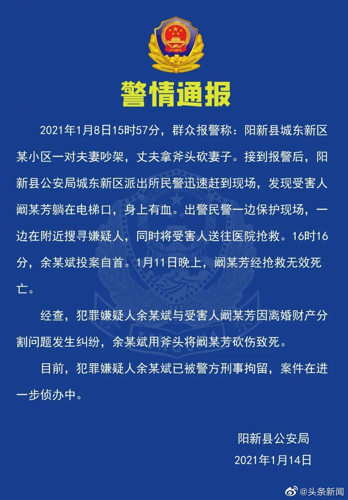

婚姻真相//@午后的水妖: 财产分割-这样的措辞让人以为是女方过于苛刻精明。但实际情况往往是男方黄赌毒暴力相加，却要求女方净身出户。这叫欺负人，不叫财产分割。女方真的净身出户，他就独占抚养权然后把孩子丢给奶奶带，女方看不过去又把孩子带到自己身边，没有抚养费没有冠姓权免费代孕还代抚养。
@头条新闻:
【#警方通报丈夫持斧砍死妻子#：离婚财产分割致纠纷】#离婚期间砍杀妻子男子被刑拘#1月14日，湖北阳新警方通报，1月8日15时57分，群众报警称，阳新县城东新区某小区一对夫妻吵架，丈夫拿斧头砍妻子。接警后，阳新县公安局城东新区派出所民警迅速赶到现场，发现受害人阚某芳躺在电梯口，身上有血。出警民警一边保护现场，一边在附近搜寻嫌疑人，同时将受害人送往医院抢救。16时16分，余某斌投案自首。11日晚，阚某芳经抢救无效死亡。
经查，犯罪嫌疑人余某斌与受害人阚某芳因离婚财产分割问题发生纠纷，余某斌用斧头将阚某芳砍伤致死。目前犯罪嫌疑人余某斌已被警方刑事拘留。（阳新公安微信公号）
经查，犯罪嫌疑人余某斌与受害人阚某芳因离婚财产分割问题发生纠纷，余某斌用斧头将阚某芳砍伤致死。目前犯罪嫌疑人余某斌已被警方刑事拘留。（阳新公安微信公号）
- 